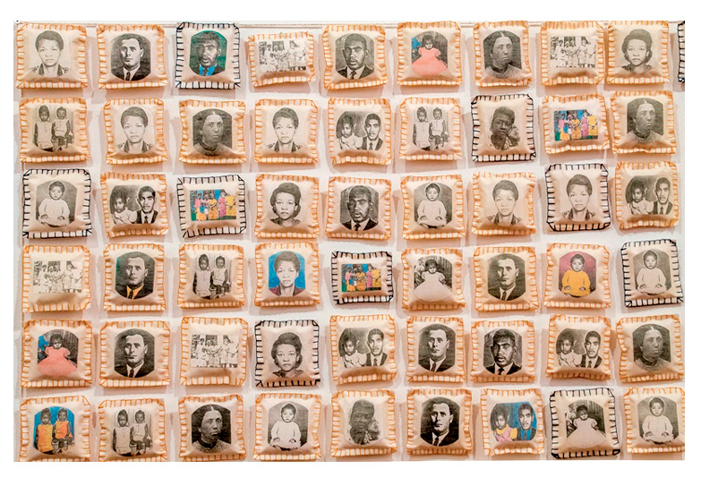
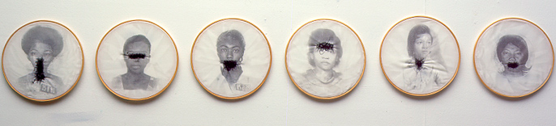

Museu do eu, museu de nós
Vimos que o museu é um espaço de preservação da memória ao mesmo tempo que suas exposições constroem uma narrativa e influenciam o modo como entendemos a nós mesmos, ou seja, contribui para formar nossa identidade, tanto enquanto povo quanto enquanto indivíduos. Não é difícil perceber isso: basta pensar na frustração diante da possibilidade de perder o fóssil de Luzia no incêndio do Museu Nacional: Luzia é a “primeira brasileira”, é a primeira de nós e, por isso, há algo que nos conecta a essa mulher que viveu mais de 10000 anos atrás.
É possível pensar em museus e espaços de memória que concentram as narrativas de pequenas comunidades, como é o caso do bairro, de uma escola, da sala de aula. Iniciativas assim contribuem para dar voz àqueles que nem sempre são contemplados nas narrativas oficiais e contribui para valorizar e fortalecer as identidades locais. Vamos lá?
- Faça uma roda e peça aos alunos para responderem à seguinte pergunta: O que você salvaria de um incêndio? Pense em objetos e lugares que ajudam a contar quem você é.
- Se eles tiverem dificuldade para começar, você pode dar um exemplo (ou responder você à pergunta para incentivá-los): “Eu salvaria de um incêndio o jogo de copos de vidro laranja que minha mãe guarda no armário da cozinha. Ela herdou esses copos da minha avó, que nasceu e morreu na Paraíba e a quem não conheci. Minha avó morreu antes de eu nascer e como eles eram de uma família pobre, não tiravam fotos. Isso quer dizer que as imagens que tenho da aparência da minha avó são imaginadas e foram sendo construídas pelas descrições que ouvi em casa. Esses copos são uma espécie de elo com a minha origem. Quando eu os toco é como se tocasse em minha avó”.
- Após ouvir as histórias, aponte a importância de compartilhar essas histórias para conectar o grupo e para que se possa respeitar mais ao outro. Mostre também que a escolha do objeto ou do lugar exigiu, tal como no Museu, um processo de escolha que levou em consideração determinados critérios.
- Explique aos alunos que o próximo passo é criar um espaço na escola para expor esses objetos. Por isso, é preciso combinar uma data para que eles tragam os objetos ou ainda fotos e desenhos desses objetos. É possível também que eles pensem em ressignificar o objeto escolhido por meio de linguagens artísticas em uma parceria com os professores de artes.
Para saber mais
Pontes entre arte e memória
Há artistas visuais que se valem dos objetos de memória para criar suas obras. Você pode mostrar aos alunos alguns exemplos da artista brasileira contemporânea Rosana Paulino. Em uma de suas obras, ela faz intervenções com linha e agulha em fotos de mulheres da sua família para evidenciar o silenciamento da mulher negra, muitas vezes em razão da violência doméstica.
 Do mesmo modo, há escritores que usam a própria biografia como ponto de partida para a escrita literária. É o que o crítico Serge Doubrovsky, nos anos 1970, chamou de autoficção. No Brasil, esse estilo é bem representado por Julián Fuks, que ganhou o Prêmio Jabuti de romance em 2016 com o livro A Resistência, no qual sua relação com o irmão adotivo é o material para a escrita. Cristóvão Tezza, autor de O filho eterno, e Bernardo Kucinski, de K. - Relato de uma busca, são outros exemplos do uso da biografia na ficção.